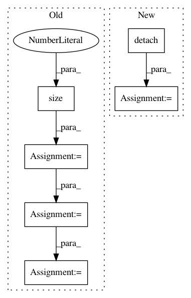

dc9aafd83851f7c55c6fe61702e281856ec023ca,models/accelerated_shift_net/accelerated_InnerShiftTripleFunction.py,AcceleratedInnerShiftTripleFunction,forward,#Any#Any#Any#Any#Any#Any#Any#,8
Before Change
latter_all = input.narrow(1, c//2, c//2) ////// UNET ADD
assert mask.dim() == 2, "Mask dimension must be 2"
ex_mask = mask.expand(1, c//2, mask.size(0), mask.size(1)) // 1*c*h*w
inv_ex_mask = torch.add(torch.neg(ex_mask.float()), 1).byte()
if torch.cuda.is_available:
ctx.ind_lst = ctx.ind_lst.cuda()
flag = flag.cuda()
inv_ex_mask = inv_ex_mask.cuda()
// None batch version
for idx in range(ctx.bz):
latter = latter_all.narrow(0, idx, 1) ////// UNET ADD
After Change
shift_masked = shift_masked.detach()
return torch.cat((former, latter, shift_masked), 1)
In pattern: SUPERPATTERN
Frequency: 3
Non-data size: 6
Instances
Project Name: Zhaoyi-Yan/Shift-Net_pytorch
Commit Name: dc9aafd83851f7c55c6fe61702e281856ec023ca
Time: 2018-12-13
Author: yanzhaoyi@outlook.com
File Name: models/accelerated_shift_net/accelerated_InnerShiftTripleFunction.py
Class Name: AcceleratedInnerShiftTripleFunction
Method Name: forward
Project Name: Scitator/catalyst
Commit Name: f93beff338925cc1bf1b3ff1b32a2c440a4c9427
Time: 2020-04-21
Author: scitator@gmail.com
File Name: tests/_tests_scripts/z_mvp_mnist_gan.py
Class Name: CustomRunner
Method Name: _handle_batch